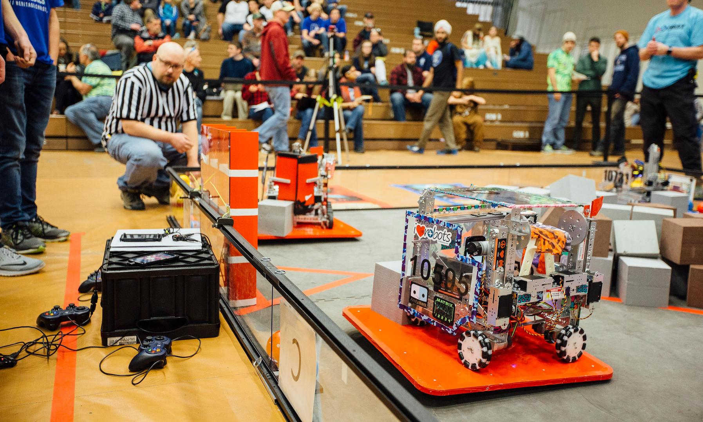
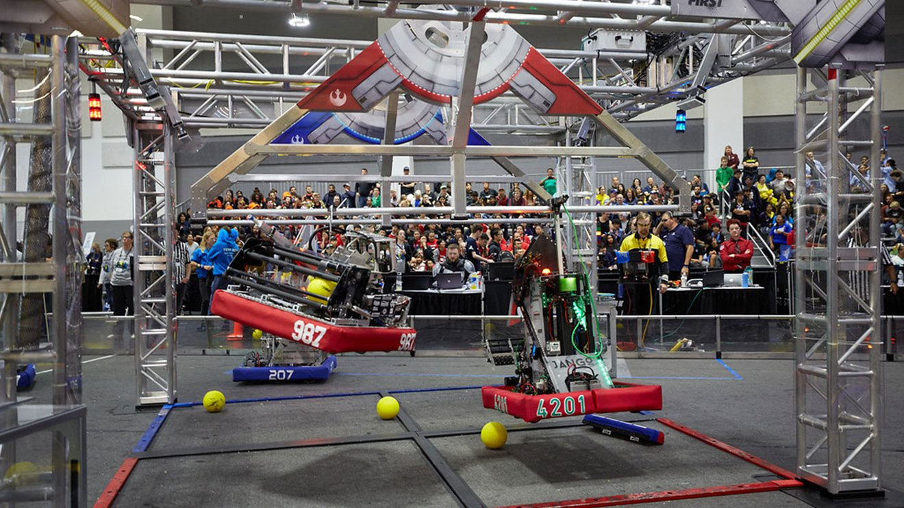

is a series of engineering challenges posed to participants grades PreK - 12. These challenges are designed to encourage students to participate in STEM fields in a fun and engaging way. The Webb Robotics team has been competing since 2004 and is now one of the oldest active teams in the region.


is an introduction to the FIRST community open to students grades PreK - 8, with three subcompetitions directed at more specific age groups. These competitions are designed to be fun and interactive while getting young students exited about STEM fields.

becomes more advanced than FLL and is open to middle and high school students. This program teaches students the basics of coding, robot design and assembly, team branding, and community outreach.

is the top level of competition for FIRST. High school students are placed under a strict time limit to create all the necesary components for their robot from scratch and compete against other teams from around the world in a different game every year, culminating in the FIRST Championship in the spring.